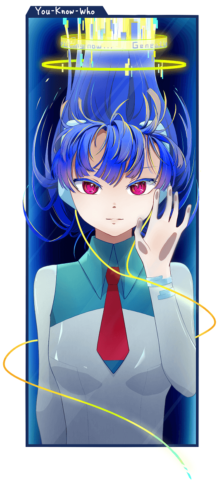
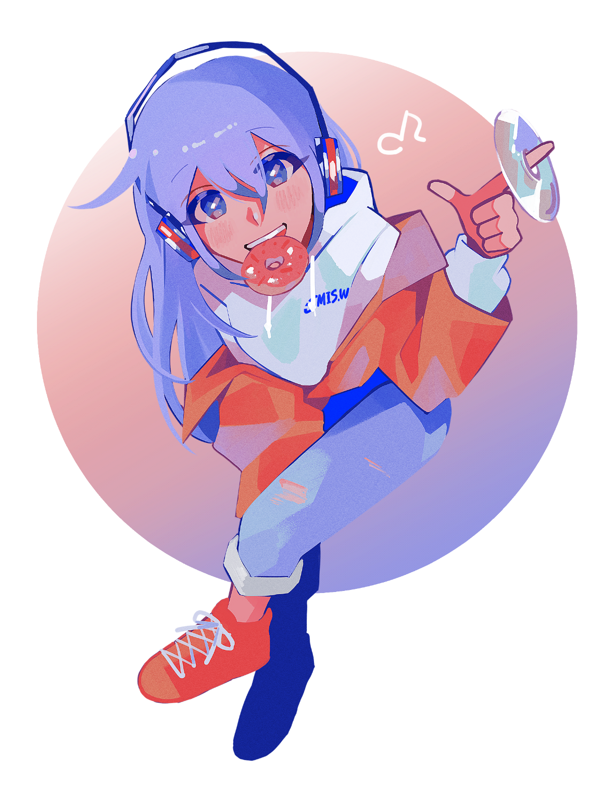

MIS.Wは、早稲田大学最大のデジタル創作サークルです。
MIS.Wのサークル員は主に三つの研究会に分かれて活動しています。
What is MIS.W?
What is MIS.W?
プログラミング研究会
プログラミング研究会では、プログラミングについて学び、オリジナルのゲームや独自のシステムを制作する活動をしています。
ゲーム制作の基礎となるC++やC#はもちろん、Web開発で用いられるRubyやgolang、中にはHaskellやRust、Python、Processing等といった言語を学んでいるサークル員もいます。
普段の活動では制作したゲームやシステムを発表したり、新しい知識をお互いに学び合ったりしています。
ゲーム制作の基礎となるC++やC#はもちろん、Web開発で用いられるRubyやgolang、中にはHaskellやRust、Python、Processing等といった言語を学んでいるサークル員もいます。
普段の活動では制作したゲームやシステムを発表したり、新しい知識をお互いに学び合ったりしています。
keywords:競技プログラミング,ゲーム制作,Web制作,C,Java,Python,Processing,JavaScript

CG研究会
CG研究会では、デジタルイラストを中心にCG(コンピューターグラフィックス)を使った創作活動をしています。
デジタルイラストの他に、ドット絵、3Dモデリング、デザイン、動画制作などの活動をしているサークル員もいます。
コミケや早稲田祭などの各イベントでは、発表するゲームのグラフィックスを担当したり、画集を制作したりしています。日々の活動中では各自が書いたイラストを発表しあったり、使用しているソフトの入門講座を開いたりするなど活発に活動しています。
デジタルイラストの他に、ドット絵、3Dモデリング、デザイン、動画制作などの活動をしているサークル員もいます。
コミケや早稲田祭などの各イベントでは、発表するゲームのグラフィックスを担当したり、画集を制作したりしています。日々の活動中では各自が書いたイラストを発表しあったり、使用しているソフトの入門講座を開いたりするなど活発に活動しています。
keywords:デジタルイラスト,ドット絵,動画制作,3Dモデリング,デザイン
MIDI研究会
MIDI研究会では、パソコンとDAW(音楽制作用ソフト)を用いた音楽の制作(DTM : Desk-Top-Music)を行っています。
作る音楽ジャンルは様々で、クラブサウンド・バンドサウンド・チップチェーン・ボーカロイドなど各自が特異なスタイルで曲や歌、サークルで制作するゲームのBGM等を作っています。
普段の活動では、上級生がDTMに関する講座を開催したり、テーマに沿って作った音楽の発表会を行ったりしています。早稲田祭やコミックマーケットでは、会員から楽曲を募集して制作したコンセプトアルバムCDの頒布・販売も行っています。
作る音楽ジャンルは様々で、クラブサウンド・バンドサウンド・チップチェーン・ボーカロイドなど各自が特異なスタイルで曲や歌、サークルで制作するゲームのBGM等を作っています。
普段の活動では、上級生がDTMに関する講座を開催したり、テーマに沿って作った音楽の発表会を行ったりしています。早稲田祭やコミックマーケットでは、会員から楽曲を募集して制作したコンセプトアルバムCDの頒布・販売も行っています。
keywords:DTM,DAW,VOCALOID,作曲,DJ

Works
作品集
Works
作品集
Join Us
入会方法
Join Us
入会方法
今年度の入会案内は、 新歓サイト2022にて詳しくご案内しております。